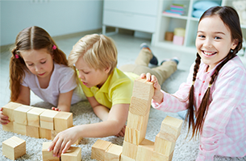

Розвиток перших освітніх навиків

Інтелектуальний розвиток (пізнавальні заняття: знайомство з навколишнім світом, формування уявлень про природу, про рослинний і тваринний світ, основами математики)
Розвиток дрібної моторики руки, фантазії та уяви (творчі заняття: ліплення, образотворча діяльність, аплікація, робота з природним матеріалом)
Розвиток музичного слуху, почуття ритму, уваги, пам'яті, акторської майстерності (музичні заняття: ритмічні вправи, танці, пальчикові ігри)
Кожне заняття триває 1 годину і складається з декількох блоків. Малюк не відчуває втоми, тому що відбувається зміна діяльності.
//= template/footer.html